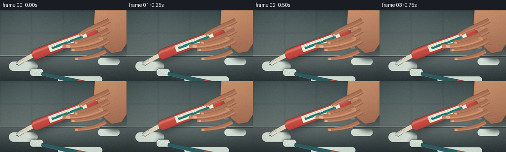
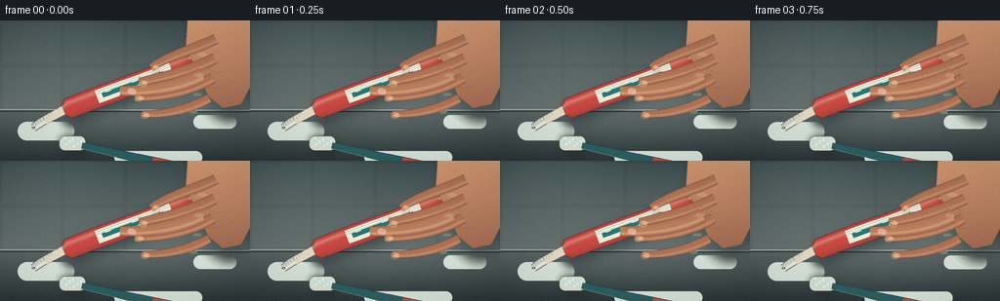
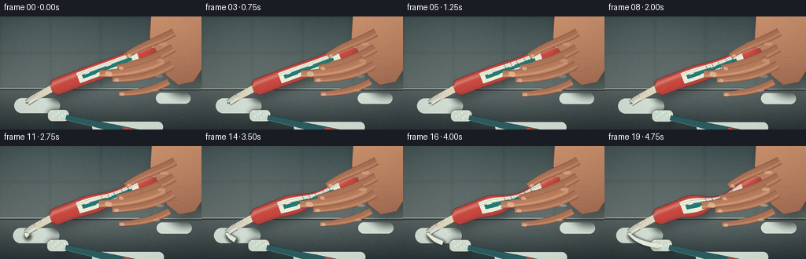
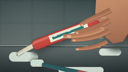
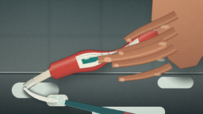
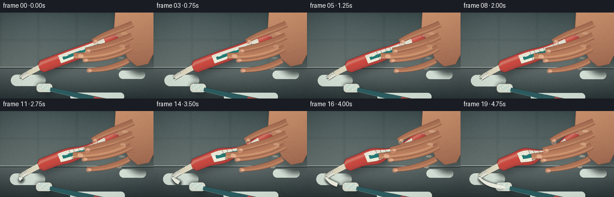

CODING AGENTS AS PIXEL WORLD MODELS
traex/DeepSeek-V4.1-Flash · mechanics_0020
点击播放 · 原生 RGB 像素
逐轮保存的候选
回放视频、检查图与代码变化。
每份候选均可单独播放。实际图片检查记录在下方工具轨迹中。
候选 01播放与检查图
点击播放 · 原生 RGB 像素


展开代码变化
--- 上一保存版本
+++ 本次保存版本
@@ -0,0 +1,743 @@
+from __future__ import annotations
+
+import math
+import subprocess
+from pathlib import Path
+
+import imageio_ffmpeg
+import numpy as np
+from PIL import Image, ImageDraw, ImageFilter, ImageFont
+
+import artifact_io
+
+
+CASE_DIR = Path(__file__).resolve().parent
+W, H, N, FPS = 256, 144, 20, 4.0
+S = 4
+RW, RH = W * S, H * S
+
+FONT_BOLD = "/usr/share/fonts/truetype/dejavu/DejaVuSans-Bold.ttf"
+FONT_CONDENSED = "/usr/share/fonts/truetype/dejavu/DejaVuSansCondensed-Bold.ttf"
+
+
+def sc(v):
+ return int(round(v * S))
+
+
+def pt(p):
+ return (sc(p[0]), sc(p[1]))
+
+
+def clamp(x, lo=0.0, hi=1.0):
+ return max(lo, min(hi, x))
+
+
+def smoothstep(a, b, x):
+ t = clamp((x - a) / (b - a))
+ return t * t * (3.0 - 2.0 * t)
+
+
+def lerp(a, b, t):
+ return a + (b - a) * t
+
+
+def mix(c0, c1, t):
+ return tuple(int(round(lerp(c0[i], c1[i], t))) for i in range(3))
+
+
+def rgba(color, alpha=255):
+ return (color[0], color[1], color[2], int(round(alpha)))
+
+
+def cubic(p0, p1, p2, p3, t):
+ u = 1.0 - t
+ return (
+ u**3 * p0[0] + 3 * u * u * t * p1[0] + 3 * u * t * t * p2[0] + t**3 * p3[0],
+ u**3 * p0[1] + 3 * u * u * t * p1[1] + 3 * u * t * t * p2[1] + t**3 * p3[1],
+ )
+
+
+def cubic_derivative(p0, p1, p2, p3, t):
+ u = 1.0 - t
+ return (
+ 3 * u * u * (p1[0] - p0[0]) + 6 * u * t * (p2[0] - p1[0]) + 3 * t * t * (p3[0] - p2[0]),
+ 3 * u * u * (p1[1] - p0[1]) + 6 * u * t * (p2[1] - p1[1]) + 3 * t * t * (p3[1] - p2[1]),
+ )
+
+
+def quad(p0, p1, p2, t):
+ u = 1.0 - t
+ return (
+ u * u * p0[0] + 2 * u * t * p1[0] + t * t * p2[0],
+ u * u * p0[1] + 2 * u * t * p1[1] + t * t * p2[1],
+ )
+
+
+def normal_from_tangent(tangent):
+ length = math.hypot(*tangent) + 1e-8
+ return (-tangent[1] / length, tangent[0] / length)
+
+
+def draw_gradient_polygon(base, points, top_color, bottom_color, mask_blur=0.0):
+ mask = Image.new("L", (RW, RH), 0)
+ ImageDraw.Draw(mask).polygon(points, fill=255)
+ if mask_blur:
+ mask = mask.filter(ImageFilter.GaussianBlur(mask_blur))
+ arr = np.empty((RH, RW, 3), dtype=np.float32)
+ y = np.linspace(0.0, 1.0, RH, dtype=np.float32)[:, None]
+ for c in range(3):
+ arr[:, :, c] = lerp(top_color[c], bottom_color[c], y)
+ layer = Image.fromarray(np.clip(arr, 0, 255).astype(np.uint8), "RGB").convert("RGBA")
+ layer.putalpha(mask)
+ base.alpha_composite(layer)
+
+
+def draw_tapered_curve(
+ base,
+ p0,
+ p1,
+ p2,
+ p3,
+ r0,
+ r1,
+ colors,
+ samples=150,
+ outline=True,
+ outline_color=(91, 51, 42, 135),
+ sheen=0.42,
+):
+ """Draw a shaded, rounded finger-like curve."""
+ centers = []
+ widths = []
+ for i in range(samples + 1):
+ t = i / samples
+ c = cubic(p0, p1, p2, p3, t)
+ tangent = cubic_derivative(p0, p1, p2, p3, t)
+ n = normal_from_tangent(tangent)
+ radius = lerp(r0, r1, smoothstep(0.0, 1.0, t))
+ radius *= 0.93 + 0.07 * math.sin(math.pi * t)
+ centers.append((c, n))
+ widths.append(radius)
+
+ layer = Image.new("RGBA", (RW, RH), (0, 0, 0, 0))
+ draw = ImageDraw.Draw(layer)
+ base_color, shadow_color, light_color = colors
+ cross_n = 20
+ for i in range(samples):
+ (c0, n0), w0 = centers[i], widths[i]
+ (c1, n1), w1 = centers[i + 1], widths[i + 1]
+ for j in range(cross_n):
+ u0 = -1.0 + 2.0 * j / cross_n
+ u1 = -1.0 + 2.0 * (j + 1) / cross_n
+ um = (u0 + u1) * 0.5
+ edge = abs(um)
+ body = math.sqrt(max(0.0, 1.0 - edge * edge))
+ shade = 0.48 + 0.38 * body
+ color = mix(shadow_color, base_color, shade)
+ highlight = math.exp(-((um + 0.40) / 0.22) ** 2) * sheen
+ color = mix(color, light_color, highlight)
+ q0 = (sc(c0[0] + n0[0] * w0 * u0), sc(c0[1] + n0[1] * w0 * u0))
+ q1 = (sc(c0[0] + n0[0] * w0 * u1), sc(c0[1] + n0[1] * w0 * u1))
+ q2 = (sc(c1[0] + n1[0] * w1 * u1), sc(c1[1] + n1[1] * w1 * u1))
+ q3 = (sc(c1[0] + n1[0] * w1 * u0), sc(c1[1] + n1[1] * w1 * u0))
+ draw.polygon([q0, q1, q2, q3], fill=rgba(color))
+
+ if outline:
+ top = []
+ bottom = []
+ for c, n in centers:
+ radius = widths[len(top)]
+ top.append((sc(c[0] + n[0] * radius), sc(c[1] + n[1] * radius)))
+ bottom.append((sc(c[0] - n[0] * radius), sc(c[1] - n[1] * radius)))
+ draw.line(top, fill=outline_color, width=max(1, sc(0.55)), joint="curve")
+ draw.line(bottom, fill=outline_color, width=max(1, sc(0.55)), joint="curve")
+
+ base.alpha_composite(layer)
+
+
+def draw_soft_shadow(base, polygon, offset=(3, 5), blur=5, alpha=95):
+ mask = Image.new("L", (RW, RH), 0)
+ shifted = [(x + sc(offset[0]), y + sc(offset[1])) for x, y in polygon]
+ ImageDraw.Draw(mask).polygon(shifted, fill=alpha)
+ mask = mask.filter(ImageFilter.GaussianBlur(sc(blur)))
+ layer = Image.new("RGBA", (RW, RH), (15, 22, 22, 255))
+ layer.putalpha(mask)
+ base.alpha_composite(layer)
+
+
+def background():
+ yy, xx = np.mgrid[0:RH, 0:RW].astype(np.float32)
+ x = xx / RW
+ y = yy / RH
+
+ wall_t = np.clip(y / 0.64, 0, 1)
+ wall = np.zeros((RH, RW, 3), dtype=np.float32)
+ wall[:, :, 0] = lerp(49, 96, wall_t)
+ wall[:, :, 1] = lerp(65, 108, wall_t)
+ wall[:, :, 2] = lerp(66, 105, wall_t)
+
+ light = 20 * np.exp(-(((x - 0.20) / 0.38) ** 2 + ((y - 0.05) / 0.48) ** 2))
+ light += 8 * np.exp(-(((x - 0.82) / 0.28) ** 2 + ((y - 0.18) / 0.34) ** 2))
+ wall += light[:, :, None]
+
+ tile_w = 64 * S
+ tile_h = 46 * S
+ grout_x = np.abs(((xx + tile_w * 0.5) % tile_w) - tile_w * 0.5)
+ grout_y = np.abs(((yy + tile_h * 0.5) % tile_h) - tile_h * 0.5)
+ grout = np.maximum(np.exp(-(grout_x / (1.2 * S)) ** 2), np.exp(-(grout_y / (1.2 * S)) ** 2))
+ wall -= (grout * 9.0)[:, :, None] * (yy < 92 * S)[:, :, None]
+
+ counter_y = 91 * S
+ counter_t = np.clip((yy - counter_y) / (RH - counter_y), 0, 1)
+ counter = np.zeros_like(wall)
+ counter[:, :, 0] = lerp(86, 40, counter_t)
+ counter[:, :, 1] = lerp(97, 51, counter_t)
+ counter[:, :, 2] = lerp(96, 53, counter_t)
+ counter += (9 * np.exp(-(((x - 0.52) / 0.38) ** 2 + ((y - 0.74) / 0.17) ** 2)))[:, :, None]
+
+ image = np.where((yy < counter_y)[:, :, None], wall, counter)
+ image += np.random.default_rng(7).normal(0, 1.5, (RH, RW, 1))
+ image = Image.fromarray(np.clip(image, 0, 255).astype(np.uint8), "RGB").convert("RGBA")
+ image = image.filter(ImageFilter.GaussianBlur(1.4 * S))
+
+ draw = ImageDraw.Draw(image, "RGBA")
+ draw.line([(0, counter_y), (RW, counter_y + sc(1))], fill=(184, 197, 189, 85), width=sc(1.1))
+ draw.line([(0, counter_y + sc(2.0)), (RW, counter_y + sc(2.7))], fill=(27, 37, 38, 70), width=sc(0.9))
+
+ # Soft out-of-focus reflected window light on the counter.
+ for x0, y0, w0, h0, a in [
+ (18, 104, 58, 19, 20),
+ (198, 97, 44, 14, 15),
+ (117, 134, 90, 13, 10),
+ ]:
+ box = (sc(x0), sc(y0), sc(x0 + w0), sc(y0 + h0))
+ draw.rounded_rectangle(box, radius=sc(h0 / 2), fill=(215, 228, 217, a))
+ return image
+
+
+def tube_geometry(pressure):
+ p0 = (65.0, 92.0)
+ p1 = (99.0, 79.0)
+ p2 = (182.0, 47.0)
+ p3 = (237.0, 28.0)
+ samples = 360
+ centers, normals, widths = [], [], []
+ for i in range(samples + 1):
+ t = i / samples
+ c = cubic(p0, p1, p2, p3, t)
+ tangent = cubic_derivative(p0, p1, p2, p3, t)
+ n = normal_from_tangent(tangent)
+
+ bend = pressure * (7.0 * math.exp(-((t - 0.55) / 0.18) ** 2) + 1.7 * math.exp(-((t - 0.39) / 0.12) ** 2))
+ c = (c[0], c[1] + bend)
+ pinch = 1.0 - pressure * 0.58 * math.exp(-((t - 0.535) / 0.115) ** 2)
+ bulge = 1.0 + pressure * 0.35 * math.exp(-((t - 0.35) / 0.095) ** 2)
+ end_taper = 0.58 + 0.42 * smoothstep(0.0, 0.055, t) * (1.0 - smoothstep(0.95, 1.0, t))
+ width = 10.6 * pinch * bulge * end_taper
+ centers.append(c)
+ normals.append(n)
+ widths.append(width)
+ return centers, normals, widths
+
+
+def draw_tube(base, pressure):
+ centers, normals, widths = tube_geometry(pressure)
+ outer = []
+ for i, (c, n) in enumerate(zip(centers, normals)):
+ w = widths[i]
+ outer.append((sc(c[0] + n[0] * w), sc(c[1] + n[1] * w)))
+ for i in range(len(centers) - 1, -1, -1):
+ c, n, w = centers[i], normals[i], widths[i]
+ outer.append((sc(c[0] - n[0] * w), sc(c[1] - n[1] * w)))
+ draw_soft_shadow(base, outer, offset=(3.0, 5.5), blur=5.5, alpha=104)
+
+ layer = Image.new("RGBA", (RW, RH), (0, 0, 0, 0))
+ draw = ImageDraw.Draw(layer)
+ samples = len(centers) - 1
+ cross_n = 26
+ coral = (204, 70, 61)
+ coral_light = (246, 142, 120)
+ coral_shadow = (119, 38, 41)
+ cream = (241, 239, 218)
+ cream_shadow = (176, 190, 174)
+ teal = (24, 101, 99)
+
+ for i in range(samples):
+ t = i / samples
+ c0, n0, w0 = centers[i], normals[i], widths[i]
+ c1, n1, w1 = centers[i + 1], normals[i + 1], widths[i + 1]
+ for j in range(cross_n):
+ u0 = -1.0 + 2.0 * j / cross_n
+ u1 = -1.0 + 2.0 * (j + 1) / cross_n
+ um = (u0 + u1) * 0.5
+ body = math.sqrt(max(0.0, 1.0 - um * um))
+ shade = 0.43 + 0.53 * body
+ color = mix(coral_shadow, coral, shade)
+ color = mix(color, coral_light, math.exp(-((um + 0.48) / 0.23) ** 2) * 0.62)
+
+ # White mint band and small dark-teal inset.
+ if 0.255 < t < 0.665 and -0.72 < um < 0.58:
+ color = mix(cream_shadow, cream, 0.60 + 0.35 * body)
+ color = mix(color, (255, 255, 244), math.exp(-((um + 0.42) / 0.25) ** 2) * 0.35)
+ if 0.287 < t < 0.625 and -0.58 < um < 0.47:
+ wave = 0.010 * math.sin((t - 0.29) * 42.0)
+ if abs(um - wave) < 0.20:
+ color = mix(teal, (43, 139, 129), body * 0.45)
+
+ q0 = (sc(c0[0] + n0[0] * w0 * u0), sc(c0[1] + n0[1] * w0 * u0))
+ q1 = (sc(c0[0] + n0[0] * w0 * u1), sc(c0[1] + n0[1] * w0 * u1))
+ q2 = (sc(c1[0] + n1[0] * w1 * u1), sc(c1[1] + n1[1] * w1 * u1))
+ q3 = (sc(c1[0] + n1[0] * w1 * u0), sc(c1[1] + n1[1] * w1 * u0))
+ draw.polygon([q0, q1, q2, q3], fill=rgba(color))
+
+ # Fine longitudinal sheen.
+ for u, alpha, width_px in [(-0.52, 90, 0.38), (-0.31, 55, 0.22), (0.66, 40, 0.18)]:
+ line = []
+ for i in range(0, samples + 1, 3):
+ c, n, w = centers[i], normals[i], widths[i]
+ line.append((sc(c[0] + n[0] * w * u), sc(c[1] + n[1] * w * u)))
+ draw.line(line, fill=(255, 247, 225, alpha), width=max(1, sc(width_px)), joint="curve")
+
+ # Pressure creases appear as the tube buckles around the grip.
+ if pressure > 0.10:
+ for k, (tt, phase) in enumerate([(0.435, 0.0), (0.475, 1.7), (0.515, 3.2), (0.565, 1.2), (0.605, 4.1)]):
+ idx = int(tt * samples)
+ c, n, w = centers[idx], normals[idx], widths[idx]
+ alpha = int(120 * smoothstep(0.10, 0.85, pressure))
+ a0 = -0.83
+ a1 = 0.78
+ mid = 0.09 * math.sin(phase + pressure * 2.0)
+ q0 = (sc(c[0] + n[0] * w * a0), sc(c[1] + n[1] * w * a0))
+ q1 = (sc(c[0] + n[0] * w * mid + 0.8), sc(c[1] + n[1] * w * mid + 0.8))
+ q2 = (sc(c[0] + n[0] * w * a1), sc(c[1] + n[1] * w * a1))
+ draw.line([q0, q1, q2], fill=(86, 29, 34, alpha), width=max(1, sc(0.42)))
+
+ # Body outline.
+ top = [(sc(c[0] + n[0] * w), sc(c[1] + n[1] * w)) for c, n, w in zip(centers, normals, widths)]
+ bottom = [(sc(c[0] - n[0] * w), sc(c[1] - n[1] * w)) for c, n, w in zip(centers, normals, widths)]
+ draw.line(top, fill=(94, 29, 34, 170), width=max(1, sc(0.42)), joint="curve")
+ draw.line(bottom, fill=(75, 26, 30, 190), width=max(1, sc(0.48)), joint="curve")
+
+ # Crimp at the sealed end.
+ c, n, w = centers[-1], normals[-1], widths[-1]
+ tangent = normal_from_tangent(n)
+ crimp_poly = [
+ (sc(c[0] + n[0] * w * 0.82), sc(c[1] + n[1] * w * 0.82)),
+ (sc(c[0] + n[0] * w * 0.82 + tangent[0] * 2.2), sc(c[1] + n[1] * w * 0.82 + tangent[1] * 2.2)),
+ (sc(c[0] - n[0] * w * 0.82 + tangent[0] * 2.2), sc(c[1] - n[1] * w * 0.82 + tangent[1] * 2.2)),
+ (sc(c[0] - n[0] * w * 0.82), sc(c[1] - n[1] * w * 0.82)),
+ ]
+ draw.polygon(crimp_poly, fill=(166, 56, 53, 255))
+ draw.line(crimp_poly + [crimp_poly[0]], fill=(92, 31, 34, 210), width=max(1, sc(0.45)))
+ for q in [-0.58, -0.2, 0.2, 0.58]:
+ a = (c[0] + n[0] * w * q, c[1] + n[1] * w * q)
+ b = (a[0] + tangent[0] * 1.8, a[1] + tangent[1] * 1.8)
+ draw.line([pt(a), pt(b)], fill=(105, 34, 35, 150), width=max(1, sc(0.28)))
+
+ # Neck and cap.
+ c0, n0, w0 = centers[0], normals[0], widths[0]
+ neck_end = (45.5, 102.5)
+ neck_width = 4.4
+ neck_poly = [
+ (sc(c0[0] + n0[0] * w0 * 0.74), sc(c0[1] + n0[1] * w0 * 0.74)),
+ (sc(neck_end[0] + n0[0] * neck_width), sc(neck_end[1] + n0[1] * neck_width)),
+ (sc(neck_end[0] - n0[0] * neck_width), sc(neck_end[1] - n0[1] * neck_width)),
+ (sc(c0[0] - n0[0] * w0 * 0.74), sc(c0[1] - n0[1] * w0 * 0.74)),
+ ]
+ draw.polygon(neck_poly, fill=(225, 218, 193, 255))
+ draw.line(neck_poly + [neck_poly[0]], fill=(112, 93, 78, 180), width=max(1, sc(0.35)))
+
+ cap0 = neck_end
+ cap1 = (34.0, 110.2)
+ cap_r = 4.6
+ draw_tapered_curve(
+ layer,
+ cap0,
+ (40.0, 105.2),
+ (37.0, 108.0),
+ cap1,
+ cap_r,
+ cap_r * 0.88,
+ ((229, 229, 213), (126, 131, 119), (255, 255, 245)),
+ samples=70,
+ outline=True,
+ outline_color=(86, 83, 72, 175),
+ sheen=0.75,
+ )
+ tangent = (cap1[0] - cap0[0], cap1[1] - cap0[1])
+ length = math.hypot(*tangent)
+ tangent = (tangent[0] / length, tangent[1] / length)
+ n = normal_from_tangent(tangent)
+ for q in np.linspace(-0.72, 0.72, 7):
+ a = (cap0[0] + tangent[0] * length * q, cap0[1] + tangent[1] * length * q)
+ b = (a[0] + n[0] * cap_r * 1.55, a[1] + n[1] * cap_r * 1.55)
+ draw.line([pt(a), pt(b)], fill=(133, 134, 119, 80), width=max(1, sc(0.22)))
+
+ # Nozzle opening and a tiny mint glint.
+ nozzle = (cap1[0] - tangent[0] * 0.3, cap1[1] - tangent[1] * 0.3)
+ draw.ellipse(
+ (sc(nozzle[0] - 1.65), sc(nozzle[1] - 1.05), sc(nozzle[0] + 1.65), sc(nozzle[1] + 1.05)),
+ fill=(61, 72, 66, 235),
+ )
+ draw.ellipse(
+ (sc(nozzle[0] - 1.05), sc(nozzle[1] - 0.62), sc(nozzle[0] + 0.7), sc(nozzle[1] + 0.35)),
+ fill=(190, 226, 202, 185),
+ )
+
+ base.alpha_composite(layer)
+ return layer
+
+
+def draw_label(base):
+ layer = Image.new("RGBA", (RW, RH), (0, 0, 0, 0))
+ draw = ImageDraw.Draw(layer)
+ font = ImageFont.truetype(FONT_BOLD, sc(5.4))
+ text = "MINT"
+ angle = -17.5
+ temp = Image.new("RGBA", (sc(46), sc(14)), (0, 0, 0, 0))
+ td = ImageDraw.Draw(temp)
+ bbox = td.textbbox((0, 0), text, font=font, stroke_width=max(1, sc(0.15)))
+ tw, th = bbox[2] - bbox[0], bbox[3] - bbox[1]
+ td.text(((temp.width - tw) / 2 - bbox[0], (temp.height - th) / 2 - bbox[1]), text, font=font, fill=(20, 91, 90, 245))
+ rotated = temp.rotate(angle, resample=Image.Resampling.BICUBIC, expand=True)
+ layer.alpha_composite(rotated, (sc(131), sc(56)))
+
+ font2 = ImageFont.truetype(FONT_CONDENSED, sc(3.0))
+ text2 = "FRESH"
+ bbox2 = draw.textbbox((0, 0), text2, font=font2)
+ temp2 = Image.new("RGBA", (bbox2[2] + sc(3), bbox2[3] + sc(2)), (0, 0, 0, 0))
+ ImageDraw.Draw(temp2).text((sc(1), 0), text2, font=font2, fill=(250, 248, 230, 230))
+ temp2 = temp2.rotate(-17.5, resample=Image.Resampling.BICUBIC, expand=True)
+ layer.alpha_composite(temp2, (sc(191), sc(36)))
+ base.alpha_composite(layer)
+
+
+def draw_toothbrush(base, paste_amount):
+ head_center = (74.0, 126.0)
+ angle = math.radians(13.0)
+ tangent = (math.cos(angle), math.sin(angle))
+ normal = (-math.sin(angle), math.cos(angle))
+
+ def head_polygon(offset=(0.0, 0.0), length=18.0, width=7.0):
+ points = []
+ for along, across in [(-0.65, -1), (0.65, -1), (0.65, 1), (-0.65, 1)]:
+ x = head_center[0] + tangent[0] * along * length + normal[0] * across * width + offset[0]
+ y = head_center[1] + tangent[1] * along * length + normal[1] * across * width + offset[1]
+ points.append(pt((x, y)))
+ return points
+
+ draw_soft_shadow(base, head_polygon(), offset=(3.0, 5.0), blur=5.0, alpha=90)
+ draw = ImageDraw.Draw(base, "RGBA")
+ draw.rounded_rectangle(
+ (sc(head_center[0] - 13.5), sc(head_center[1] - 7.5), sc(head_center[0] + 13.5), sc(head_center[1] + 7.5)),
+ radius=sc(6.0),
+ fill=(219, 225, 211, 255),
+ outline=(89, 96, 89, 180),
+ width=max(1, sc(0.45)),
+ )
+
+ # Bristle field.
+ for row in range(3):
+ for col in range(7):
+ along = -8.8 + col * 2.8
+ across = -3.9 + row * 3.2
+ x = head_center[0] + tangent[0] * along + normal[0] * across
+ y = head_center[1] + tangent[1] * along + normal[1] * across
+ color = (179, 231, 225, 235) if (row + col) % 3 else (243, 247, 231, 245)
+ draw.ellipse((sc(x - 0.9), sc(y - 0.8), sc(x + 0.9), sc(y + 0.8)), fill=color)
+
+ # Handle, tapered toward the brush head.
+ handle = []
+ for i in range(48):
+ t = i / 47
+ along = 10.0 + t * 145.0
+ x = head_center[0] + tangent[0] * along
+ y = head_center[1] + tangent[1] * along
+ half = 3.2 + 2.2 * smoothstep(0.0, 0.7, t)
+ handle.append((sc(x + normal[0] * half), sc(y + normal[1] * half)))
+ for i in range(47, -1, -1):
+ t = i / 47
+ along = 10.0 + t * 145.0
+ x = head_center[0] + tangent[0] * along
+ y = head_center[1] + tangent[1] * along
+ half = 3.2 + 2.2 * smoothstep(0.0, 0.7, t)
+ handle.append((sc(x - normal[0] * half), sc(y - normal[1] * half)))
+ draw.polygon(handle, fill=(43, 91, 95, 255))
+ draw.line(handle[:48], fill=(130, 180, 173, 150), width=max(1, sc(0.45)), joint="curve")
+ draw.line(handle[47:95], fill=(24, 53, 57, 220), width=max(1, sc(0.45)), joint="curve")
+
+ # Colored rubber grip.
+ grip = []
+ for i in range(22):
+ t = i / 21
+ along = 84.0 + t * 44.0
+ x = head_center[0] + tangent[0] * along
+ y = head_center[1] + tangent[1] * along
+ half = 4.4 + 0.8 * math.sin(math.pi * t)
+ grip.append((sc(x + normal[0] * half), sc(y + normal[1] * half)))
+ for i in range(21, -1, -1):
+ t = i / 21
+ along = 84.0 + t * 44.0
+ x = head_center[0] + tangent[0] * along
+ y = head_center[1] + tangent[1] * along
+ half = 4.4 + 0.8 * math.sin(math.pi * t)
+ grip.append((sc(x - normal[0] * half), sc(y - normal[1] * half)))
+ draw.polygon(grip, fill=(178, 78, 69, 245))
+ for k in range(5):
+ along = 91.0 + k * 7.0
+ x = head_center[0] + tangent[0] * along
+ y = head_center[1] + tangent[1] * along
+ a = (x + normal[0] * 3.8, y + normal[1] * 3.8)
+ b = (x - normal[0] * 3.8, y - normal[1] * 3.8)
+ draw.line([pt(a), pt(b)], fill=(112, 47, 48, 90), width=max(1, sc(0.3)))
+
+ if paste_amount > 0:
+ draw_paste(base, paste_amount)
+
+
+def draw_paste(base, amount):
+ nozzle = (33.5, 110.1)
+ control = (43.0, 123.0)
+ target = (70.5, 126.3)
+ samples = 120
+ path = []
+ for i in range(samples + 1):
+ t = i / samples
+ path.append(quad(nozzle, control, target, t))
+
+ used = max(1, int((samples + 1) * clamp(amount)))
+ used = min(used, len(path))
+ centers = path[:used]
+
+ outer = []
+ inner = []
+ for i, c in enumerate(centers):
+ t = i / max(1, used - 1)
+ r = 1.35 + 1.25 * smoothstep(0.0, 0.72, t)
+ if i == 0:
+ r *= 0.72
+ if i + 1 < len(centers):
+ tangent = (centers[i + 1][0] - c[0], centers[i + 1][1] - c[1])
+ else:
+ tangent = (c[0] - centers[i - 1][0], c[1] - centers[i - 1][1])
+ n = normal_from_tangent(tangent)
+ outer.append((sc(c[0] + n[0] * r), sc(c[1] + n[1] * r)))
+ inner.append((sc(c[0] - n[0] * r), sc(c[1] - n[1] * r)))
+
+ poly = outer + inner[::-1]
+ if len(poly) >= 3:
+ draw_soft_shadow(base, poly, offset=(1.2, 2.4), blur=2.2, alpha=95)
+ layer = Image.new("RGBA", (RW, RH), (0, 0, 0, 0))
+ draw = ImageDraw.Draw(layer)
+ draw.polygon(poly, fill=(244, 245, 229, 255))
+ draw.line(outer, fill=(255, 255, 248, 245), width=max(1, sc(0.55)), joint="curve")
+ draw.line(inner, fill=(158, 177, 170, 220), width=max(1, sc(0.42)), joint="curve")
+ if len(centers) > 4:
+ highlight = [(sc(c[0] - 0.45), sc(c[1] - 0.45)) for c in centers]
+ draw.line(highlight, fill=(255, 255, 255, 190), width=max(1, sc(0.3)), joint="curve")
+ base.alpha_composite(layer)
+
+ if amount > 0.74:
+ # A compact mint-white coil accumulates on the bristles.
+ draw = ImageDraw.Draw(base, "RGBA")
+ strength = smoothstep(0.74, 1.0, amount)
+ for k, (x, y, rx, ry) in enumerate([(67.0, 125.5, 5.0, 2.4), (72.0, 126.5, 4.4, 2.1)]):
+ draw.ellipse(
+ (sc(x - rx * strength), sc(y - ry * strength), sc(x + rx * strength), sc(y + ry * strength)),
+ fill=(242, 244, 230, 245),
+ outline=(167, 185, 177, 190),
+ width=max(1, sc(0.32)),
+ )
+ if amount > 0.90:
+ for x, y, r in [(64.5, 122.7, 0.6), (75.0, 124.8, 0.45), (61.0, 127.8, 0.4)]:
+ draw.ellipse((sc(x - r), sc(y - r), sc(x + r), sc(y + r)), fill=(250, 251, 240, 230))
+
+
+def draw_hand(base, pressure):
+ palm_points = [
+ pt((192.0, -4.0)),
+ pt((258.0, -4.0)),
+ pt((259.0, 63.0)),
+ pt((246.0, 83.0)),
+ pt((226.0, 87.0)),
+ pt((211.0, 75.0)),
+ pt((203.0, 53.0)),
+ pt((190.0, 27.0)),
+ ]
+ draw_soft_shadow(base, palm_points, offset=(3.5, 7.0), blur=7.0, alpha=85)
+ draw_gradient_polygon(base, palm_points, (213, 151, 112), (130, 77, 60), mask_blur=0.7)
+
+ palm_layer = Image.new("RGBA", (RW, RH), (0, 0, 0, 0))
+ pd = ImageDraw.Draw(palm_layer)
+ pd.polygon(palm_points, outline=(92, 50, 42, 155), width=max(1, sc(0.5)))
+ pd.line([pt((204, 44)), pt((219, 53)), pt((236, 52))], fill=(118, 67, 52, 80), width=max(1, sc(0.5)))
+ pd.line([pt((211, 69)), pt((226, 69)), pt((241, 63))], fill=(105, 57, 48, 70), width=max(1, sc(0.45)))
+ base.alpha_composite(palm_layer)
+
+ skin = ((183, 121, 88), (122, 73, 59), (237, 181, 137))
+ finger_specs = [
+ ((221.0, 20.0), (203.0, 31.0), (178.0, 37.0), (160.0 - pressure * 1.8, 50.0 + pressure * 2.0), 5.6, 4.2),
+ ((220.0, 40.0), (200.0, 53.0), (172.0, 61.0), (149.0 - pressure * 1.6, 65.0 + pressure * 2.2), 5.8, 4.2),
+ ((219.0, 61.0), (197.0, 75.0), (168.0, 80.0), (143.0 - pressure * 1.4, 80.0 + pressure * 2.2), 5.5, 4.0),
+ ((214.0, 83.0), (194.0, 95.0), (169.0, 98.0), (151.0 - pressure, 98.0 + pressure * 1.8), 4.8, 3.4),
+ ]
+ for spec in finger_specs:
+ draw_tapered_curve(base, *spec[:4], spec[4], spec[5], skin, samples=125, sheen=0.38)
+
+ # Thumb lies across the near face of the tube and visibly presses inward.
+ thumb_end = (126.5 - pressure * 2.0, 72.5 + pressure * 3.4)
+ draw_tapered_curve(
+ base,
+ (207.0, 56.0),
+ (183.0, 68.0),
+ (154.0, 73.0),
+ thumb_end,
+ 7.0,
+ 4.9,
+ ((194, 131, 95), (125, 73, 57), (244, 191, 146)),
+ samples=145,
+ sheen=0.45,
+ )
+
+ # Knuckle highlights and joint creases sell the increasing force.
+ over = Image.new("RGBA", (RW, RH), (0, 0, 0, 0))
+ od = ImageDraw.Draw(over)
+ knuckle_alpha = int(45 + 55 * pressure)
+ for x, y, rx, ry in [(207, 35, 5.2, 2.1), (204, 56, 5.1, 2.0), (202, 76, 4.8, 1.8), (198, 94, 4.1, 1.6)]:
+ od.ellipse((sc(x - rx), sc(y - ry), sc(x + rx), sc(y + ry)), fill=(255, 225, 188, knuckle_alpha))
+
+ for p0, p1, p2, p3, *_ in finger_specs:
+ for t in (0.28, 0.58, 0.81):
+ c = cubic(p0, p1, p2, p3, t)
+ tangent = cubic_derivative(p0, p1, p2, p3, t)
+ n = normal_from_tangent(tangent)
+ a = (c[0] + n[0] * 2.8, c[1] + n[1] * 2.8)
+ b = (c[0] - n[0] * 2.8, c[1] - n[1] * 2.8)
+ od.line([pt(a), pt(b)], fill=(107, 57, 48, 65), width=max(1, sc(0.30)))
+ base.alpha_composite(over)
+
+ # Nails and pale pressure pads.
+ nails = Image.new("RGBA", (RW, RH), (0, 0, 0, 0))
+ nd = ImageDraw.Draw(nails)
+ for p0, p1, p2, p3, *_ in finger_specs:
+ c = cubic(p0, p1, p2, p3, 0.94)
+ tangent = cubic_derivative(p0, p1, p2, p3, 0.94)
+ angle = math.degrees(math.atan2(tangent[1], tangent[0]))
+ nail = Image.new("RGBA", (sc(7), sc(5)), (0, 0, 0, 0))
+ nd2 = ImageDraw.Draw(nail)
+ nd2.rounded_rectangle((sc(0.4), sc(0.2), sc(6.2), sc(4.1)), radius=sc(1.7), fill=(239, 188, 157, 165))
+ nd2.arc((sc(0.7), sc(0.2), sc(5.8), sc(3.8)), 190, 345, fill=(255, 229, 202, 120), width=max(1, sc(0.3)))
+ nail = nail.rotate(angle, resample=Image.Resampling.BICUBIC, expand=True)
+ nails.alpha_composite(nail, (sc(c[0] - 3.0), sc(c[1] - 2.0)))
+
+ tc = quad((207, 56), (183, 68), thumb_end, 0.91)
+ nt = Image.new("RGBA", (sc(10), sc(7)), (0, 0, 0, 0))
+ nd3 = ImageDraw.Draw(nt)
+ nd3.rounded_rectangle((sc(0.4), sc(0.4), sc(9.2), sc(6.0)), radius=sc(2.6), fill=(239, 188, 155, 185))
+ nd3.arc((sc(0.6), sc(0.3), sc(8.8), sc(5.5)), 190, 350, fill=(255, 232, 207, 135), width=max(1, sc(0.3)))
+ nt = nt.rotate(-11, resample=Image.Resampling.BICUBIC, expand=True)
+ nails.alpha_composite(nt, (sc(tc[0] - 4.0), sc(tc[1] - 3.0)))
+ base.alpha_composite(nails)
+
+
+def add_high_pressure_splatter(base, pressure):
+ if pressure < 0.72:
+ return
+ draw = ImageDraw.Draw(base, "RGBA")
+ strength = smoothstep(0.72, 1.0, pressure)
+ particles = [
+ (31.0, 107.5, 0.55),
+ (29.0, 105.0, 0.38),
+ (30.0, 113.5, 0.42),
+ (28.0, 109.0, 0.28),
+ ]
+ for x, y, r in particles:
+ rr = r * strength
+ draw.ellipse((sc(x - rr), sc(y - rr), sc(x + rr), sc(y + rr)), fill=(239, 247, 228, int(190 * strength)))
+
+
+def render_frame(index):
+ t = index / (N - 1)
+ # A slow start followed by a sharp rise in pressure.
+ pressure = 0.05 + 0.95 * (t**1.78)
+ base = background()
+ draw_toothbrush(base, 0.0)
+ draw_tube(base, pressure)
+ draw_label(base)
+ paste_amount = clamp((t - 0.38) / 0.62) ** 1.55
+ if paste_amount > 0:
+ draw_paste(base, paste_amount)
+ draw_hand(base, pressure)
+ add_high_pressure_splatter(base, pressure)
+
+ # Subtle push-in keeps the timelapse alive without distracting from the action.
+ zoom = 1.0 + 0.022 * smoothstep(0.0, 1.0, t)
+ crop_w = int(round(RW / zoom))
+ crop_h = int(round(RH / zoom))
+ cx = RW * 0.50 + sc(1.5 * (t - 0.5))
+ cy = RH * 0.50 + sc(0.8 * (t - 0.5))
+ left = int(round(cx - crop_w / 2))
+ top = int(round(cy - crop_h / 2))
+ left = max(0, min(RW - crop_w, left))
+ top = max(0, min(RH - crop_h, top))
+ crop = base.convert("RGB").crop((left, top, left + crop_w, top + crop_h))
+ frame = np.asarray(crop.resize((W, H), Image.Resampling.LANCZOS), dtype=np.float32)
+
+ # Gentle highlight roll-off, film grain, and vignette.
+ frame = 255.0 * np.power(np.clip(frame / 255.0, 0, 1), 0.96)
+ yy, xx = np.mgrid[0:H, 0:W].astype(np.float32)
+ xn = (xx - W / 2) / (W / 2)
+ yn = (yy - H / 2) / (H / 2)
+ vignette = 1.0 - 0.10 * np.clip((xn * xn * 0.65 + yn * yn * 0.55), 0, 1)
+ frame *= vignette[:, :, None]
+ rng = np.random.default_rng(1000 + index)
+ grain = rng.normal(0, 1.45, (H, W, 1))
+ frame += grain
+ return np.clip(frame, 0, 255).astype(np.uint8)
+
+
+def write_mp4(frames):
+ path = CASE_DIR / "video.mp4"
+ ffmpeg = imageio_ffmpeg.get_ffmpeg_exe()
+ cmd = [
+ ffmpeg,
+ "-y",
+ "-loglevel",
+ "error",
+ "-f",
+ "rawvideo",
+ "-vcodec",
+ "rawvideo",
+ "-pix_fmt",
+ "rgb24",
+ "-s",
+ f"{W}x{H}",
+ "-r",
+ str(FPS),
+ "-i",
+ "-",
+ "-an",
+ "-c:v",
+ "libx264",
+ "-preset",
+ "medium",
+ "-crf",
+ "17",
+ "-pix_fmt",
+ "yuv420p",
+ "-movflags",
+ "+faststart",
+ str(path),
+ ]
+ subprocess.run(cmd, input=frames.tobytes(), check=True)
+
+
+def main():
+ frames = np.stack([render_frame(i) for i in range(N)])
+ artifact_io.save(frames, CASE_DIR)
+ write_mp4(frames)
+ print(f"generated {frames.shape} at {FPS:g} fps")
+
+
+if __name__ == "__main__":
+ main()
候选 02播放与检查图
点击播放 · 原生 RGB 像素


展开代码变化
--- 上一保存版本
+++ 本次保存版本
@@ -217,9 +217,9 @@
def tube_geometry(pressure):
p0 = (65.0, 92.0)
- p1 = (99.0, 79.0)
- p2 = (182.0, 47.0)
- p3 = (237.0, 28.0)
+ p1 = (99.0 - 1.4 * pressure, 79.0 - 1.2 * pressure)
+ p2 = (182.0 + 2.0 * pressure, 47.0 - 3.4 * pressure)
+ p3 = (237.0 + 1.0 * pressure, 28.0 - 4.2 * pressure)
samples = 360
centers, normals, widths = [], [], []
for i in range(samples + 1):
@@ -228,12 +228,13 @@
tangent = cubic_derivative(p0, p1, p2, p3, t)
n = normal_from_tangent(tangent)
- bend = pressure * (7.0 * math.exp(-((t - 0.55) / 0.18) ** 2) + 1.7 * math.exp(-((t - 0.39) / 0.12) ** 2))
+ bend = pressure * (8.4 * math.exp(-((t - 0.55) / 0.18) ** 2) + 2.5 * math.exp(-((t - 0.39) / 0.12) ** 2))
c = (c[0], c[1] + bend)
- pinch = 1.0 - pressure * 0.58 * math.exp(-((t - 0.535) / 0.115) ** 2)
- bulge = 1.0 + pressure * 0.35 * math.exp(-((t - 0.35) / 0.095) ** 2)
+ pinch = 1.0 - pressure * 0.67 * math.exp(-((t - 0.535) / 0.12) ** 2)
+ bulge = 1.0 + pressure * 0.46 * math.exp(-((t - 0.345) / 0.095) ** 2)
+ upper_swell = 1.0 + pressure * 0.13 * math.exp(-((t - 0.76) / 0.13) ** 2)
end_taper = 0.58 + 0.42 * smoothstep(0.0, 0.055, t) * (1.0 - smoothstep(0.95, 1.0, t))
- width = 10.6 * pinch * bulge * end_taper
+ width = 10.6 * pinch * bulge * upper_swell * end_taper
centers.append(c)
normals.append(n)
widths.append(width)
@@ -300,17 +301,17 @@
# Pressure creases appear as the tube buckles around the grip.
if pressure > 0.10:
- for k, (tt, phase) in enumerate([(0.435, 0.0), (0.475, 1.7), (0.515, 3.2), (0.565, 1.2), (0.605, 4.1)]):
+ for k, (tt, phase) in enumerate([(0.365, 0.0), (0.405, 1.7), (0.445, 3.2), (0.485, 1.2), (0.565, 4.1), (0.605, 2.5)]):
idx = int(tt * samples)
c, n, w = centers[idx], normals[idx], widths[idx]
- alpha = int(120 * smoothstep(0.10, 0.85, pressure))
+ alpha = int(150 * smoothstep(0.10, 0.85, pressure))
a0 = -0.83
a1 = 0.78
- mid = 0.09 * math.sin(phase + pressure * 2.0)
+ mid = 0.15 * math.sin(phase + pressure * 2.0)
q0 = (sc(c[0] + n[0] * w * a0), sc(c[1] + n[1] * w * a0))
- q1 = (sc(c[0] + n[0] * w * mid + 0.8), sc(c[1] + n[1] * w * mid + 0.8))
+ q1 = (sc(c[0] + n[0] * w * mid + 1.1), sc(c[1] + n[1] * w * mid + 1.1))
q2 = (sc(c[0] + n[0] * w * a1), sc(c[1] + n[1] * w * a1))
- draw.line([q0, q1, q2], fill=(86, 29, 34, alpha), width=max(1, sc(0.42)))
+ draw.line([q0, q1, q2], fill=(86, 29, 34, alpha), width=max(1, sc(0.48)))
# Body outline.
top = [(sc(c[0] + n[0] * w), sc(c[1] + n[1] * w)) for c, n, w in zip(centers, normals, widths)]
@@ -513,7 +514,7 @@
inner = []
for i, c in enumerate(centers):
t = i / max(1, used - 1)
- r = 1.35 + 1.25 * smoothstep(0.0, 0.72, t)
+ r = 1.55 + 1.55 * smoothstep(0.0, 0.72, t)
if i == 0:
r *= 0.72
if i + 1 < len(centers):
@@ -537,16 +538,23 @@
draw.line(highlight, fill=(255, 255, 255, 190), width=max(1, sc(0.3)), joint="curve")
base.alpha_composite(layer)
- if amount > 0.74:
+ if amount > 0.70:
# A compact mint-white coil accumulates on the bristles.
draw = ImageDraw.Draw(base, "RGBA")
- strength = smoothstep(0.74, 1.0, amount)
- for k, (x, y, rx, ry) in enumerate([(67.0, 125.5, 5.0, 2.4), (72.0, 126.5, 4.4, 2.1)]):
+ strength = smoothstep(0.70, 1.0, amount)
+ for k, (x, y, rx, ry) in enumerate([(67.0, 125.5, 5.4, 2.7), (72.0, 126.5, 4.8, 2.4)]):
draw.ellipse(
(sc(x - rx * strength), sc(y - ry * strength), sc(x + rx * strength), sc(y + ry * strength)),
- fill=(242, 244, 230, 245),
+ fill=(248, 249, 235, 250),
outline=(167, 185, 177, 190),
width=max(1, sc(0.32)),
+ )
+ draw.arc(
+ (sc(x - rx * strength * 0.8), sc(y - ry * strength * 0.8), sc(x + rx * strength * 0.8), sc(y + ry * strength * 0.8)),
+ 200,
+ 340,
+ fill=(255, 255, 250, 225),
+ width=max(1, sc(0.34)),
)
if amount > 0.90:
for x, y, r in [(64.5, 122.7, 0.6), (75.0, 124.8, 0.45), (61.0, 127.8, 0.4)]:
@@ -558,10 +566,10 @@
pt((192.0, -4.0)),
pt((258.0, -4.0)),
pt((259.0, 63.0)),
- pt((246.0, 83.0)),
- pt((226.0, 87.0)),
- pt((211.0, 75.0)),
- pt((203.0, 53.0)),
+ pt((247.0, 86.0)),
+ pt((228.0, 90.0)),
+ pt((213.0, 78.0)),
+ pt((202.0, 53.0)),
pt((190.0, 27.0)),
]
draw_soft_shadow(base, palm_points, offset=(3.5, 7.0), blur=7.0, alpha=85)
@@ -576,24 +584,24 @@
skin = ((183, 121, 88), (122, 73, 59), (237, 181, 137))
finger_specs = [
- ((221.0, 20.0), (203.0, 31.0), (178.0, 37.0), (160.0 - pressure * 1.8, 50.0 + pressure * 2.0), 5.6, 4.2),
- ((220.0, 40.0), (200.0, 53.0), (172.0, 61.0), (149.0 - pressure * 1.6, 65.0 + pressure * 2.2), 5.8, 4.2),
- ((219.0, 61.0), (197.0, 75.0), (168.0, 80.0), (143.0 - pressure * 1.4, 80.0 + pressure * 2.2), 5.5, 4.0),
- ((214.0, 83.0), (194.0, 95.0), (169.0, 98.0), (151.0 - pressure, 98.0 + pressure * 1.8), 4.8, 3.4),
+ ((221.0, 19.0), (201.0, 29.0), (175.0, 35.0), (155.0 - pressure * 4.0, 48.0 + pressure * 2.7), 5.8, 4.5),
+ ((220.0, 39.0), (197.0, 51.0), (168.0, 58.0), (143.0 - pressure * 4.8, 63.0 + pressure * 3.0), 6.1, 4.7),
+ ((218.0, 59.0), (195.0, 72.0), (164.0, 79.0), (139.0 - pressure * 4.4, 78.5 + pressure * 3.2), 5.9, 4.5),
+ ((214.0, 80.0), (193.0, 92.0), (166.0, 97.0), (146.0 - pressure * 3.2, 96.0 + pressure * 2.8), 5.2, 3.8),
]
for spec in finger_specs:
draw_tapered_curve(base, *spec[:4], spec[4], spec[5], skin, samples=125, sheen=0.38)
# Thumb lies across the near face of the tube and visibly presses inward.
- thumb_end = (126.5 - pressure * 2.0, 72.5 + pressure * 3.4)
+ thumb_end = (123.0 - pressure * 3.5, 72.0 + pressure * 4.8)
draw_tapered_curve(
base,
(207.0, 56.0),
(183.0, 68.0),
(154.0, 73.0),
thumb_end,
- 7.0,
- 4.9,
+ 7.8,
+ 5.4,
((194, 131, 95), (125, 73, 57), (244, 191, 146)),
samples=145,
sheen=0.45,
@@ -614,6 +622,19 @@
a = (c[0] + n[0] * 2.8, c[1] + n[1] * 2.8)
b = (c[0] - n[0] * 2.8, c[1] - n[1] * 2.8)
od.line([pt(a), pt(b)], fill=(107, 57, 48, 65), width=max(1, sc(0.30)))
+ tip = cubic(p0, p1, p2, p3, 0.985)
+ tangent = cubic_derivative(p0, p1, p2, p3, 0.985)
+ tip_angle = math.degrees(math.atan2(tangent[1], tangent[0]))
+ pad = Image.new("RGBA", (sc(12), sc(11)), (0, 0, 0, 0))
+ pad_draw = ImageDraw.Draw(pad)
+ pad_draw.ellipse(
+ (sc(1.0), sc(1.4), sc(10.0), sc(9.6)),
+ fill=(230, 167, 129, 92),
+ outline=(112, 62, 50, 70),
+ width=max(1, sc(0.25)),
+ )
+ pad = pad.rotate(tip_angle, resample=Image.Resampling.BICUBIC, expand=True)
+ over.alpha_composite(pad, (sc(tip[0] - 5.0), sc(tip[1] - 4.5)))
base.alpha_composite(over)
# Nails and pale pressure pads.
可观测工具轨迹
实际执行的命令与返回图片。
命令 1exit 0
/bin/bash -c "pwd && rg --files -g '"'!*.mp4'"' -g '"'!*.mov'"' -g '"'!*.webm'"' | sed -n '1,200p'"
命令 2exit 0
/bin/bash -c "printf '%s\\n' '--- prompt.txt ---'; sed -n '1,240p' prompt.txt; printf '%s\\n' '--- GENERATION_RULES.md ---'; sed -n '1,280p' GENERATION_RULES.md; printf '%s\\n' '--- task_spec.json ---'; sed -n '1,280p' task_spec.json"
命令 3exit 0
/bin/bash -c "find . -maxdepth 2 -type f -printf '%p %s bytes\\n' | sort | sed -n '1,240p'"
命令 4exit 0
/bin/bash -c "sed -n '1,260p' artifact_io.py"
命令 5exit 0
/bin/bash -c "sed -n '1,260p' player_template.html"
命令 6exit 0
/bin/bash -c "python - <<'PY' import importlib.util for n in ['numpy','PIL','cv2','scipy','imageio','matplotlib']: print(n, bool(importlib.util.find_spec(n))) PY ffmpeg -version | sed -n '1,2p'"
命令 7exit 0
/bin/bash -c "python - <<'PY'
import importlib.util
print('imageio_ffmpeg', bool(importlib.util.find_spec('imageio_ffmpeg')))
if importlib.util.find_spec('imageio_ffmpeg'):
import imageio_ffmpeg
print(imageio_ffmpeg.get_ffmpeg_exe())
PY
fc-list | sed -n '1,12p'"命令 8exit 1
/bin/bash -c 'python generate.py'
命令 9exit 0
/bin/bash -c 'python generate.py'
命令 10exit 0
/bin/bash -c "python - <<'PY'
from PIL import Image, ImageChops
import numpy as np
ims=[np.array(Image.open(f'frames/{i:02d}.png')).astype(float) for i in range(20)]
for a,b in [(0,4),(4,9),(9,14),(14,19),(0,19)]:
d=np.abs(ims[b]-ims[a])
print(a,b,'mean',d.mean().round(2),'p95',np.percentile(d,95).round(1),'changed>20',(d.max(2)>20).mean().round(3))
PY"命令 11exit 0
/bin/bash -c 'mkdir -p candidate_01 && cp -a frames inspection.png transition_check.png index.html pixels.npz video.mp4 candidate_01/'
命令 12exit 0
/bin/bash -c 'python generate.py'
视觉工具实际返回图片 1

视觉工具实际返回图片 2

视觉工具实际返回图片 3

视觉工具实际返回图片 4

保存候选 2 份；完成命令 12 次；可验证图片返回 4 张。原始 API 响应与完整日志保留在本地。